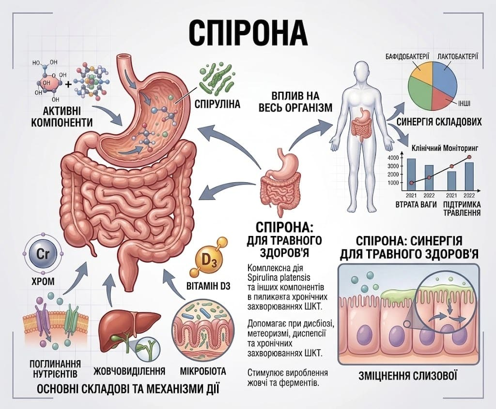

Спірона
СПІРОНА — нутрієнтна підтримка антиоксидантного та протизапального контуру при метаболічних порушеннях
.png)
Спірона (таблетки №100)
Підтримка метаболічного балансу через вплив на оксидативний стрес і прозапальну сигналізацію
Дієтична добавка на основі Spirulina platensis як додаткове джерело біологічно активних речовин. Підтримує антиоксидантний захист клітин та допомагає зменшувати прооксидантне навантаження. Не замінює базову терапію, харчування та фізичну активність.

Склад та активні речовини
1 таблетка містить:
- Порошок спіруліни пласкої (Spirulina platensis) — 1000 мг;
- Добова порція: 3 таблетки = 3000 мг порошку Spirulina platensis.
Властивості компонентів
- Spirulina platensis: є природним джерелом біоактивних компонентів (фікоціанін/фікоціанобілін, каротиноїди).
- Фікоціанін / фікоціанобілін: модулює NF-κB-сигналінг, знижує ROS/NOX-залежний оксидативний стрес та формування TNF-α і інших прозапальних медіаторів.
- Каротиноїди: β-каротин та інші каротиноїди розглядаються як частина антиоксидантного потенціалу біомаси.
Рекомендації до застосування
- Ожиріння, інсулінорезистентність, метаболічний синдром та цукровий діабет 2 типу (як частина комплексного підходу);
- Хронічне низькоінтенсивне метаболічне запалення та оксидативний стрес;
- Підтримка фізіологічної регуляції прозапальних сигнальних шляхів.
Спосіб застосування та дози
Вживати дорослим по 1 таблетці 3 рази на добу за 20–30 хв до прийому їжі, запиваючи достатньою кількістю води. Рекомендований термін застосування — 1 місяць; подальший прийом та повторний курс — за погодженням з лікарем.
Протипоказання
Вагітність і лактація, вік до 18 років, індивідуальна чутливість до компонентів.